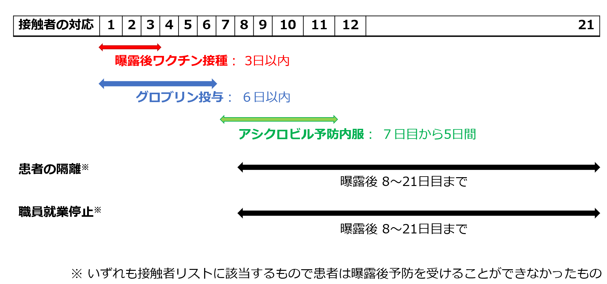

Ⅴ. 疾患別感染対策 4. 水痘/播種性帯状疱疹 及び 限局性帯状疱疹
- 水痘の臨床
●潜伏期間：10日～21日
●症状（図１）：発熱・倦怠感の後、掻痒感の強い小斑点状丘疹（紅斑）が出現し、その後水疱疹となる。発疹は水疱→膿疱→痂皮の順に急速に進行し、それぞれが同時に混在する。分布は最初に胸、背中、顔に現れ、その後全身に広がり、症状は通常4～7日間続く。水疱は痂皮化すると感染性が消失する。
●感染様式：空気感染と飛沫感染が中心で感染性が高い。水疱液の接触感染もある。
●感染期間：発疹出現の２日前から全水疱の痂皮化まで。
●治 療：アシクロビル（内服・静注）、バラシクロビル（内服）など
●重症水痘：細胞性免疫低下患者の感染では脳炎や肺炎、易出血性の合併症を併発する。
●妊娠中の水痘発症：重症化しやすく肺炎の合併が多い。また、胎児が先天性水痘症候群を罹患することがある。加えて、出産の5日前から2日後にかけて水痘の発疹が出現した場合、新生児水痘のリスクとなる。
●先天性水痘症候群：妊娠初期（8～20週目）の初感染で、2％の児に様々な障害が現れる。
- 帯状疱疹（限局性/播種性）の臨床
- 症状
水痘罹患後に三叉神経節や脊髄後根神経節に潜伏感染していた水痘・帯状疱疹ウイルスの再活性化により、片側性の知覚神経の走行に一致して疼痛や瘙痒を伴う斑状丘疹および小水疱性発疹を引き起こす。水疱は3〜5日かけて形成され、発疹は徐々に痂皮化し、通常2〜4週間で治癒する。一方で、上記皮疹が3分節以上存在する場合は播種性帯状疱疹となり、感染対策が変わるため注意が必要である（下記参照）。
- 感染様式
活動性の帯状疱疹は、水疱液への直接接触や水疱から放出されたウイルス粒子を吸入することで起こる。
＊播種性帯状疱疹、限局性でも被覆できない部分（口腔内の帯状疱疹など）、免疫不全患者(中等度〜重度)における帯状疱疹に関しては接触感染対策に加えて、水痘と同様に空気感染対策が必要である。
＊中等度〜重度の免疫不全の定義
化学療法中、免疫抑制剤を投与している固形臓器あるいは造血幹細胞移植患者、ステロイド投与(20mg/dayを2週間以上)、免疫抑制治療を行っている患者など
- 感染期間：水痘と同じく、発疹出現の2日前から全水疱の痂皮化まで
- 治療：アシクロビル(内服・静注)、バラシクロビル(内服)、ファムシクロビル(内服)、アメナメビル(内服)
- 水痘、帯状疱疹における院内感染対策
- 院内感染の予防策：平時からの職員（以下、職員とは、医師、看護師などの医療従事者のみならず実習生や事務員などの非医療従事者も含む）の水痘免疫獲得の確認。（ワクチンの項参照）
- 発症時の対応：
- 職員・患者付き添い者共に発症が疑われた時点で感染制御部（内線5093）に連絡し、小児科、感染症内科、総合診療科、または皮膚科を受診させる。
- 清拭・入浴の際には、全水疱が痂皮化するまで、皮膚を強く掻かせないよう指導する。
- 水痘、播種性帯状疱疹、被覆できない部分の帯状疱疹、免疫不全患者の帯状疱疹は接触、空気感染対策を行う。皮疹が全て痂皮化するまでは感染対策を継続する。
免疫不全患者の帯状疱疹は播種性病変が否定できれば限局性の帯状疱疹に準じた対応で良い。
水痘・播種性帯状疱疹の対応
- 限局性帯状疱疹の皮膚管理：発疹部分はガーゼではなく、フィルム等の被覆材で確実に覆う。被覆材の交換時は、標準予防策を遵守し、手袋、エプロンを適正に使用し、手指衛生を確実に行う。
- 接触者リストの作成（水痘・播種性帯状疱疹の場合に限る）
- 発疹出現の２日前から発症者と同一フロアにいた職員、患者、付き添い者等をリストアップする。
- 1歳以降に2回以上のワクチン接種が明らかである者はリストから除外する。
- 2回以上のワクチン接種歴が明らかではない者、過去に抗体価の検査を行っていない者、水痘の罹患歴がない者についてはすみやかに抗体価を測定する（詳細はワクチンの項を参照のこと）。
- 接触の程度をA、Bにランク分けし、状況に応じて対応を決定する。なお、リスク分類のためには接触の程度だけでなく、下記に示すハイリスク条件を考慮する。
- 感染制御部への連絡方法（水痘・播種性帯状疱疹の場合に限る）
下記時間帯に応じた責任者が、職員ならびに患者の感染の既往およびワクチン歴を聴取し接触者リストを作成し、感染制御部（内線5093）、または事務当直（内線 5038）に連絡し、感染制御部スタッフに連絡
平日８：３０～１７：００：病棟師長、病棟医長、リンクナース、リンクドクター
平日１７：００～８：３０：当該科当直医、病棟看護師のリーダー
土曜、日曜、祝日：当該科当直医、病棟看護師のリーダー
- 抗体価測定のための検体採取方法
発症者、接触者の血液を血清分離剤入り試験管（緑のゴム蓋）に採血し部署でまとめて、測定者リストとともに感染制御部へ提出する。（成人5 ml、小児2 ml）
ランクA（濃厚）： | 職員、患者、付き添い者等、発症者の同室にいたもの。 |
ランクB（中等度）： | 発症者と直接・間接的な接触はないが、同一フロアにいた者。 ※ランクA,Bにおいて、50歳以上は除外対象とする。 |
ハイリスク条件： | 免疫抑制剤や抗がん剤などにより治療中の免疫低下状態の者、血液腫瘍やHIV感染症などによる免疫不全状態の者、十分な免疫を保有していない妊婦、新生児（特に早産児、低出生体重児、十分な抗体を保有していない母親から出生した児） |
接 触 者 の 範 囲
- 病棟での発生
入院患者、職員が発症した場合
ランクAの職員ならびに入院患者。ランクBの職員、患者、付き添い者では必ずしも同様の対応は必要ないが、ハイリスク条件に該当する者についてはランクAと同様の対応を考慮する。
- 外来での発生
外来患者、職員が発症した場合
当該外来患者が受診した際、患者が比較的長時間滞在した外来診察室等で、、接触をしたランクAの職員ならびに患者。ただし、ハイリスク条件に該当する対象者に関しては対応を別途検討する。
- 接触者の対応（図３）：
- 接触患者が退院できない状態で、ワクチン緊急接種や抗ウイルス薬内服、グロブリン投与を共に行わない場合、接触後8日目から21日目までは個室隔離とする。
- 曝露後検査で抗体価が陰性もしくは十分な抗体価が得られていない職員は、発症がない場合でも接触後8日目から21日目までは就業停止とする。就業停止の際、キャンパスライフ健康支援・相談センター産業医の意見書の提出を感染制御部にて手配する。
- 接触者の発症予防策（図３）：以下を院内感染対策費で行う。
- 既往歴がなく抗体陰性の接触者には、接触後72時間以内であればワクチン緊急接種を検討する。※妊婦への投与は胎児への感染（先天性水痘症候群）、免疫低下患者への投与はワクチン株による感染を起こすリスクがあるため、生ワクチンの接種は禁忌である。
- バラシクロビル（体重40kg以上：1回1000mg×3回）、もしくはアシクロビル（20mg/kg×4回、それぞれ接触７日目から連日5-7日間）による予防内服を検討する。
- ワクチン接種が行えない場合、接触後6日以内であれば免疫グロブリン投与(100mg/kg、1回)も検討する。

図3
対応まとめ
疾患名 | 感染経路 | 感染対策隔離方法 | 隔離解除 |
水痘 | 空気・接触 | 個室（陰圧個室が望ましい） | 全水疱痂皮化 |
限局性帯状疱疹 | 接触 | 接触予防策(患部被覆) | |
限局性帯状疱疹 | 空気・接触 | 個室（陰圧個室が望ましい） | |
播種性帯状疱疹 | 空気・接触 | 個室（陰圧個室が望ましい） |